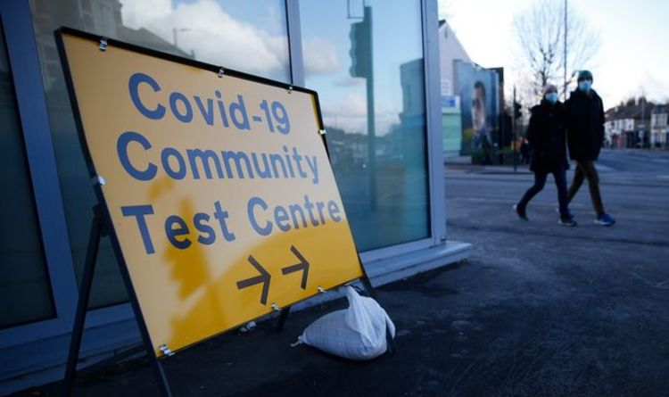

Is the South African variant of Covid more deadly?

Localised testing programmes have been launched for symptomatic and asymptomatic residents in certain areas of the country.A handful of new coronavirus variants have been discovered, sparking fears they could be more deadly than previous versions of the disease, which has already claimed 100,000 lives in the UK.
To date, 105 cases of the South African variant have been found in the UK.
Surrey County Council said on Monday afternoon that two people had caught the variant who had 'no links to travel or previous variant cases'.
The council has told those living in the Goldsworth Park and St Johns areas of Woking that they are to have a test posted through their letterbox, which they should take regardless of whether they have coronavirus symptoms or not.
The scheme will also be extended to other areas, and other councils are pursuing strategies for rapid testing.
The South African variant was first detected in October in Nelson Mandela Bay in South Africa.
There is no research to suggest that the South African variant is more deadly than other versions of the virus.
However, the variant does appear to spread more quickly than previous versions of the virus, expected to be around 50 percent more transmissible.
There has been some evidence that the UK strain of the virus, which was announced in December, could be more deadly.
'Until more people are vaccinated, this is the only way we will control the spread of the virus.'
Speaking this afternoon on a visit to a vaccination centre in West Yorkshire, the Prime Minister sought to reassure the public.
He said: 'We’re confident that all the vaccines we’re using provide a high degree of immunity and protection against all variants.
'The interesting and exciting thing about… the vaccines we’re developing is increasingly, they’re capable of being adapted to deal with new variants as they arise.
'The fact is we’re going to be living with COVID for a while to come in one way or another.'
Vaccine manufacturers and scientists are working towards making vaccines suited to tackling new variants.
Data from some vaccine candidates has suggested they are less effective against this particular variant, with Johnson Johnson and Novavax showing diminished results in efficacy compared to testing on other variants.
The South African variant has a mutation known as E484K, which is not found in the UK variant, which could be responsible for the South African variant’s ability to partially evade vaccines.
Source
Posted On: 2021-02-01T00:00:00
Posted By: Eli Pacheco
Content Date: 2021-02-01
Download Date: 2021-09-16
Document ID: L0C04G9HT